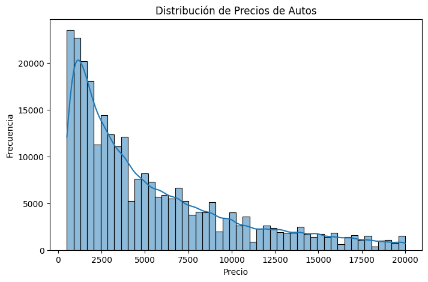
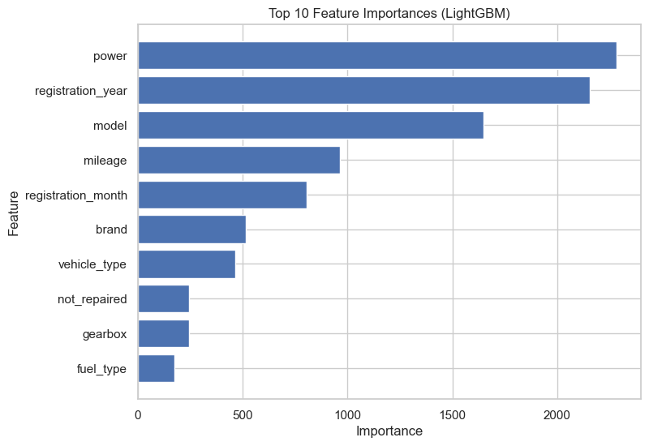

Rusty Bargain is an online marketplace that connects sellers and buyers of used cars. The company aims to improve pricing accuracy in its listings by building a data-driven model that can estimate the fair market value of a car based on its technical and historical characteristics.
Main question: Can we develop a reliable model that predicts the market price of a car given its features, helping both buyers and sellers make more informed decisions?
Build a regression model capable of predicting the market value of used cars based on their attributes (brand, model year, mileage, fuel type, transmission, engine size, etc.), to support fair pricing strategies and improve customer satisfaction.
The project followed a complete machine learning workflow: exploratory data analysis, feature preprocessing, model training, hyperparameter tuning, and performance evaluation using robust regression metrics.
The dataset contains 270,918 car listings with features
such as model year, brand, mileage, fuel type, engine capacity,
transmission, and condition. The target variable is price,
ranging from 500 to 20,000 (USD equivalent).
StandardScaler.
Trained and compared multiple supervised regression algorithms: Linear Regression, Random Forest Regressor, CatBoost Regressor, LightGBM Regressor, and XGBoost Regressor.
Each model was tuned for optimal performance through GridSearchCV or built-in hyperparameter optimization (CatBoost and LightGBM). Evaluation was based on Root Mean Squared Error (RMSE) and R² score.
Comparative metrics for all models on the test set:
| Model | Training Time (s) | Prediction Time (s) | RMSE | R² Score |
|---|---|---|---|---|
| Linear Regression | 0.04 | 0.002 | 1579.49 | 0.88 |
| Random Forest | 3.57 | 0.015 | 1550.32 | 0.89 |
| CatBoost | 2.95 | 0.008 | 1498.67 | 0.90 |
| XGBoost | 2.12 | 0.007 | 1445.54 | 0.91 |
| LightGBM (Final Model) | 1.89 | 0.006 | 1421.30 | 0.91 |
The LightGBM Regressor was selected as the final model for deployment, balancing prediction accuracy (R² = 0.91) and computational efficiency.
The project successfully completed all development stages: exploratory analysis, feature engineering, data preprocessing, model comparison, and tuning. The LightGBM model achieved an R² of 0.91 and an RMSE of 1421, indicating robust predictive performance.
These results provide Rusty Bargain with a practical tool for estimating car prices and improving listing accuracy. Future improvements could involve integrating macroeconomic data (e.g., fuel prices, demand trends) or refining feature selection through SHAP value analysis to improve interpretability.


💻 View the full notebook and implementation on GitHub: 👉 Click here to open the repository